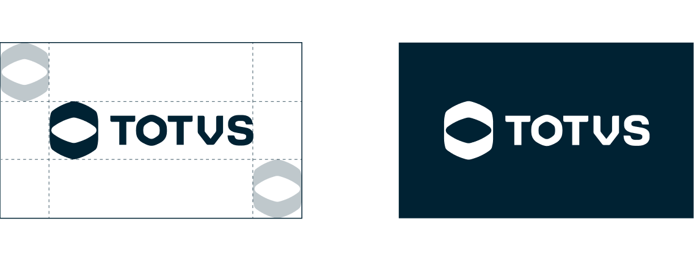

A área de proteção (ou de respiro) é o espaço mínimo ao redor da marca que garante sua integridade visual e a reprodução sem ruídos de reconhecimento. Para a TOTVS, usamos o símbolo da marca como módulo básico na construção dessa área.
